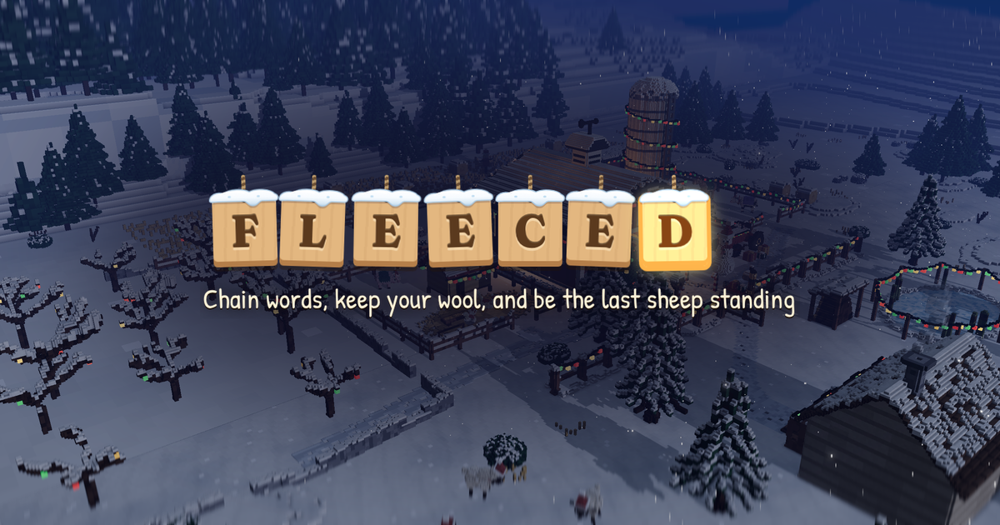

Fleeced: the free word chain game
Chain words against the clock with friends, strangers or bots. Keep your wool, and be the last sheep standing.
Play Fleeced now
What is Fleeced?
Fleeced is a word game you play in your web browser, on a computer or a phone, with nothing to download. Up to ten players sit round a table in a snowy barn, each as a farm animal, and pass an ice bomb from player to player. To pass it on, you type a real English word that starts with the last letter of the word before. Run out of time and the bomb goes off.
How to play
- Chain the word. On your turn, type a word of three or more letters that starts with the letter on the board: the last letter of the word played before yours. Press Enter to play it.
- Beat the bomb. Every turn has a clock: 15 seconds in the first round, 10 in the second, then 5. A wrong or made-up word just bounces, so try another before time runs out.
- Keep your wool. Your wool balls are your lives. When the bomb goes off on your turn you lose one, and with none left your sheep freezes and you are out.
- Watch for twists. From the second round, each round has a twist: no letter E, words of six letters or more, five letters at most, a word that must contain an O, and more.
- Outlast the flock. The last sheep standing wins the game.
Ways to play
- Queue: Casual or Ranked
- Find a game with other players. Ranked games move your rating up a ladder of eight ranks, from Wood to Zenith.
- Create a lobby or join a party
- Make a private lobby and share its code or link so friends can join you.
- Counting Sheep
- A daily word game in the farmer's dream: type a word that starts with each fence's letters to jump it. One dream a night, the same for everyone.
- Practice
- A one-on-one speed run against a bot on one life. Choose the starting clock and the bot, and beat your best.
- Tutorial
- A guided first game that shows every rule as it happens.
Questions
- Is Fleeced free?
- Yes. Fleeced is free to play, with no download. Everything you can earn in the Trading Post is cosmetic and changes nothing about how a game plays.
- Do I need an account?
- No. You can play as a guest, make lobbies and join your friends. Ranked games need an account.
- Can I play on my phone?
- Yes. Fleeced runs in the browser on phones, tablets and computers.
- Is there a French version?
- Yes. Press FR at the top of the start screen to play with French words.